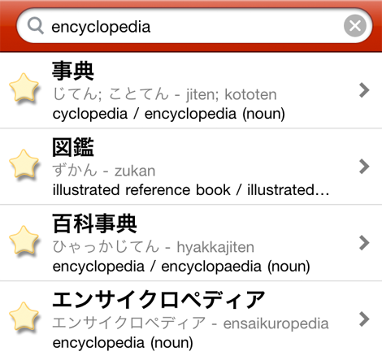

You can search Japanese Flash's 149,000 word+ dictionary in under 1 second using English, Romaji, Hiragana, or Japanese kanji.
Search works best if you look for whole words and use the plain form of verbs. You can also search multiple terms at once in either language.
Try using a ? character at the end of a word - if you search for japan?, Search will return results like Japan, Japanese, Japanofile, Japanasaurus Rex, etc...